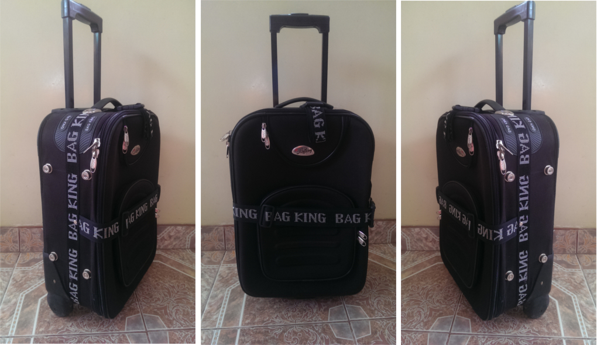

4-10 Febrero, 2015
Corte controlado por ordenador
Por esta semana la tarea fue realizar un producto mediante corte láser utilizando tres distintos tipos de press-fit. Es decir, técnicas que no requieran del uso de algún aditivo para el ensamblaje de las piezas, sino que estas solo se ajusten a presión.
La máquina utilizada fue la cortadora láser Epilog Legend 36XT. A continuación se presenta un breve tutorial sobre su adecuado uso.
MODELO PROPIO - MALETA:
Fase de observación
En primera instancia se recurrió a tomar como punto de referencia a una maleta real. En este sentido, se intentó en la medida de lo posible captar la mayor cantidad de detalles para también poder generárselos al modelo futuro. Para ello, se consideraron las limitaciones de un prototipo realizado en corte láser.

Fase de diseño 2D
Se pasó a diseñar cada una de las piezas para la maleta en Rhinoceros 5 SR9 desde la vista superior, tomando en consideración que el material a cortar sería acrílico colado (no uniforme) de 3mm en promedio. Posterior a ello se organizaron las piezas de tal forma que el espacio requerido sea el mínimo.

Fase de Simulación del armado
Se usó Solidworks para extruir los archivos dxf (2D vectorizado) y ensamblar cada pieza mediante relación de posiciones.
Fase de corte
En seguida se presenta una breve grabación de esta etapa:
Registro fotográfico
A continuación se muestra una galería del proceso completo:


Todas las tareas
Gestión de proyectos

Diseño asistido por ordenador

Corte controlado por ordenador

Producción electrónica

Escaneo e impresión 3D

Diseño electrónico
Maquinaria computarizada

Programación embebida

Moldeado y estructura

Dispositivos de entrada

Compuestos

Dispositivos de salida

Redes y comunicaciones

Diseño de máquinas

Programación de interfaz

Aplicaciones e implicaciones
Propiedad intelectual

Desarrollo de proyectos

Presentación de proyecto final